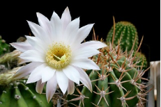

КОЛЕУС
- S.actinophylla
- (Brassaia actinophylla)
- Ш. лучелистная
- Рода Шеффлера семейства Аралиевые (Araliaceae).
- Родина - Юго-Восточная Азия, Гавайи, Тайвань
КОЛЕУС
- C. blumei
- К. Блюме
- рода Колеус семейства Яснотковые (Lamiaceae).
- Родина - тропическая Африка и Азия.
ТРАДЕСКАНЦИЯ
- (Tradescantia zebrina).
- Т. Зебровидная, зебрина
- Род многолетних вечнозелёных травянистых растений семейства Коммелиновые (Commelinaceae).
- Естественная среда обитания - тропическая и умеренная зоны Америки
КАЛАНХОЭ
- Kalanchoe daigremontiana
- К. Дегремо́на
- Род суккулентных растений
- семейства Толстянковые (Crassulaceae).
- Родина - тропическая и Южная Африка, Мадагаскар, Южная и Юго-Восточная Азия, тропики Южной Америки.
ТРАДЕСКАНЦИЯ
- Tradescantia fluminensis, myrtifolia
- Т. приречная, или миртолистная
- Род многолетних вечнозелёных травянистых растений семейства Коммелиновые (Commelinaceae).
- Родина растения — Тропическая Южная Америка.

МОЛОЧА́Й
- E. milii
- М. Милиуса, М. Ми́ля, М. прекра́сный
- Суккулент семейства Молочайные (Euphorbiaceae).
- Эндемик Мадагаскара.

АКАНТОЦЕРЕУС
- A. Tetragonus
- А. Тетрагонус
- Род растений семейства Кактусовые (Cactaceae).
- Очень широко распространён от Флориды до Мексики.
МАММИЛЛЯ́РИЯ
- M. Spinosissima
- М. Колючейшая
- Кактус из рода Маммиллярия.
- Эндемик мексиканских штатов Герреро и Морелос.

ЭХИНО́ПСИС
- Е. leucantha
- Э. белоцветковый
- Кактус из рода эхинопсис (echinópsis).
- Родина – Южная Америк
ЭЧЕВЕРИЯ
- E. fulgens Lera
- Э. блестящая
- Род суккулентных растений семейства Толстянковые
- Родина - Мексике, некоторые виды — от Техаса и Калифорнии (США)

КЛЕРОДЕНДРУМ ИЛИ КЛЕРОДЕНДРОН
- C. thomsoniae
- К. Томсона
- Род растений подсемейства Живучковые (Ajugoideae) семейства Яснотковые (Lamiaceae).
- Родина - Южная Америка, тропики Азии, Австралии, а также прибрежные зоны островов Индийского океана.

ПЕПЕРОМИЯ
- P. Magnoliaefolia
- П. магнолиелистная
- Род многолетних вечнозелёных травянистых растений семейства Перцевые (Piperaceae)
- Родина - Пеперомия произрастает в тропических районах Азии и Америки.

ГИМЕНОКАЛЛИС
- Hymenocallis festalis
- Г. приятный
- Род растений Hymenocallis
- семейства Амариллисовые (Amaryllidaceae).
- Родина – тропические и субтропические районы в Вест-Индии, Антильских островов и Южной Америки. Многолетнее луковичное растение.

САНСЕВИЕРИЯ
- S. hahnii
- C. Хана
- Род бесстеблевых вечнозелёных многолетних травянистых растений семейства Спаржевые (Asparagaceae).
- Родина - сухие каменистые регионы тропической и субтропической Африки, на Мадагаскаре, в Индии, Индонезии и Южной Флориде
ГИППЕА́СТРУМ
- Hippeastrum hybridа
- Г. гибридный
- Род растений семейства Амариллисовые (Amaryllidaceae).
- Многолетнее луковичное растение.
- Родина – Центральная и Южная Америка.